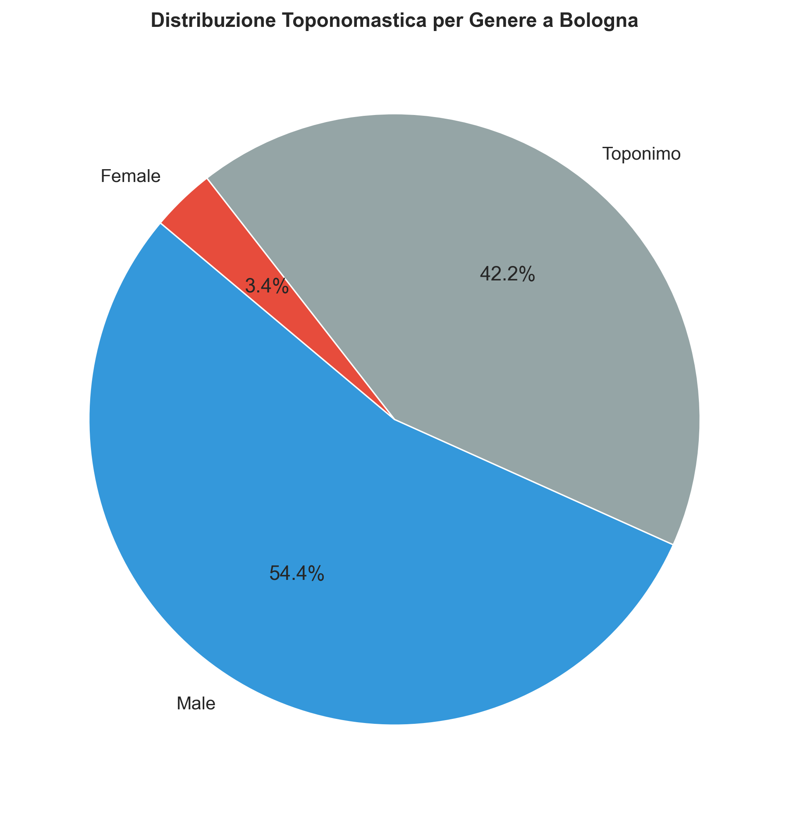
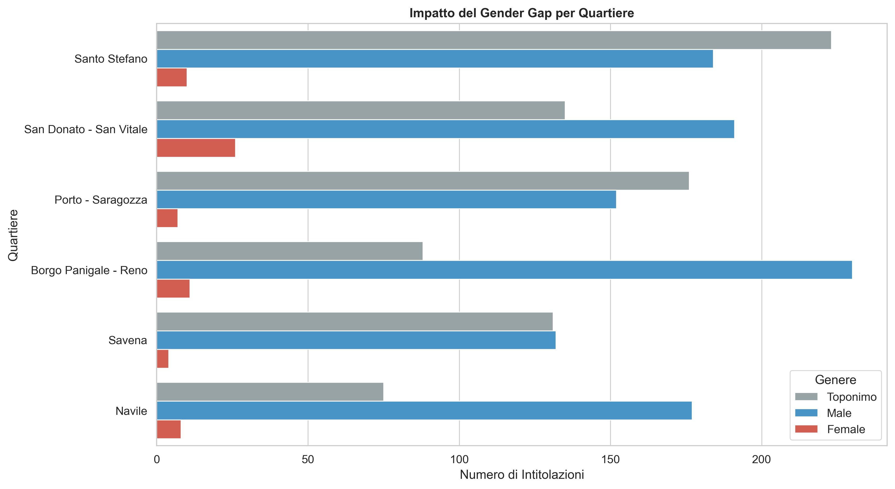
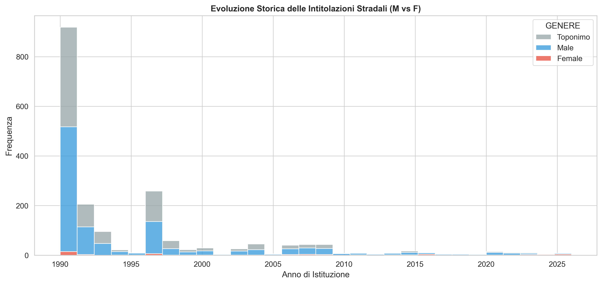
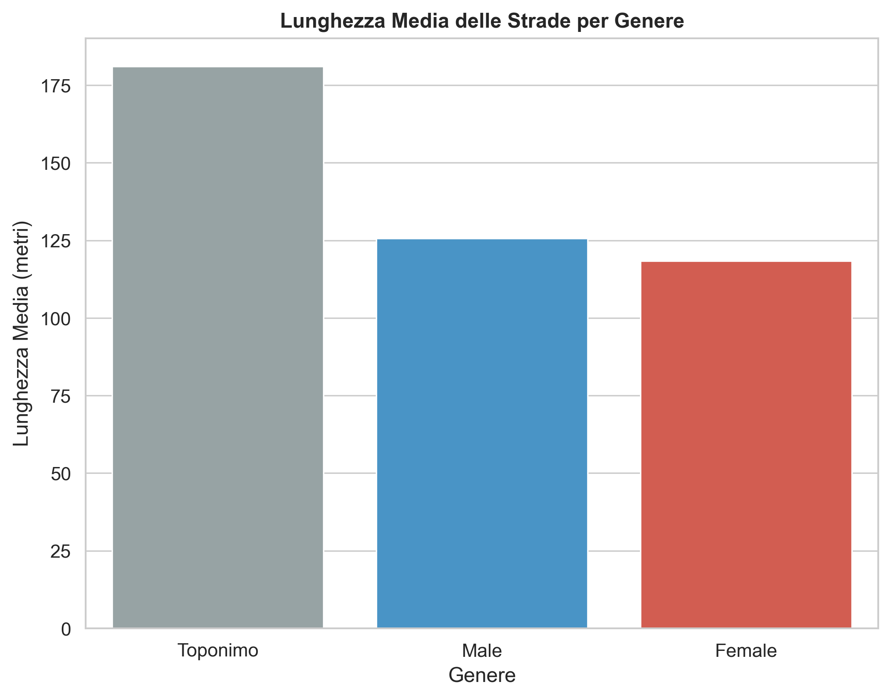
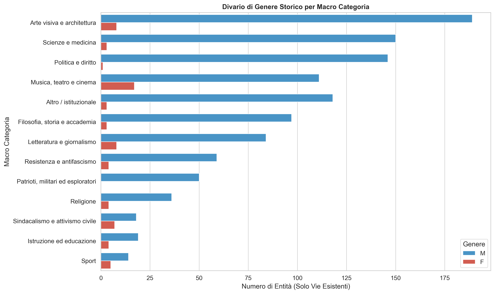
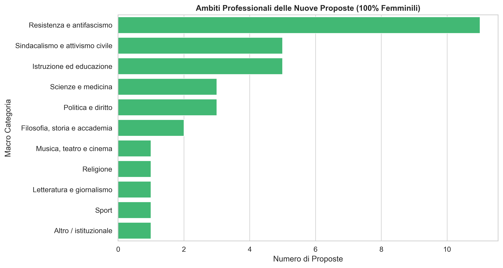
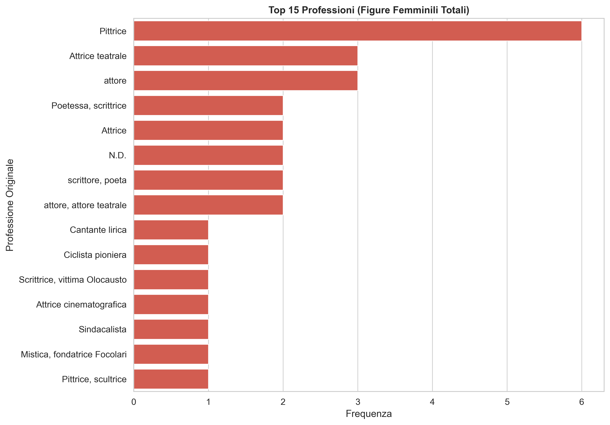

Risultati
Visualizzazioni del divario di genere e classificazione professionale delle 1.192 persone nel KG.
Il divario in numeri
Distribuzione strade per genere
Categorie professionali per genere
Confronto tra la distribuzione per categoria professionale degli uomini onorati (1.091), delle donne storicamente onorate (67) e delle donne proposte (34). I dati rivelano pattern significativi: le donne già onorate sono concentrate nello spettacolo (25,4%), mentre le proposte correggono questo squilibrio con un forte peso della Resistenza (32,4%) e dell'attivismo civile (17,6%).
Strade dedicate a donne (123 intitolazioni a persone)
Tabella filtrabile delle strade bolognesi intitolate a donne identificate. Escluse le intitolazioni a sante, nomi generici e nominativi non individuali (157 totali nel dataset del Comune).
| Intitolazione | Nome completo | Professione | Dati anagrafici |
|---|
Grafici — Gender Gap
Visualizzazioni statiche del divario di genere nella toponomastica bolognese.




Grafici — Classificazione Professionale
Confronto tra le macro-categorie professionali degli uomini, delle donne storiche e delle candidature proposte.



Mappa interattiva delle strade di Bologna
Visualizzazione geografica degli 8.029 archi stradali, colorati in base alla classificazione di genere.
Femminile
Maschile
Toponimo
Dati: Open Data Comune di Bologna — Archi stradali. Le strade femminili (rosa) sono le 66 intitolazioni a donne identificate. Clicca su una strada per vedere il nome e la classificazione.